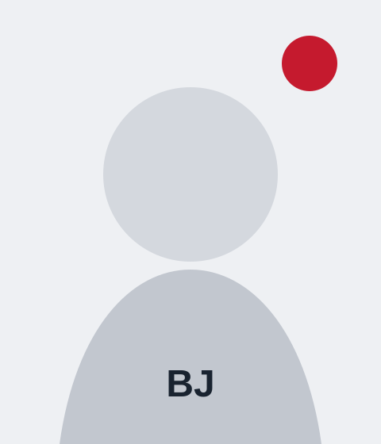

data/members.json. Replace the numbered SVG placeholders in assets/images/members/ with original photographs while retaining the filenames.

Lee Seungbin · M.S. · SK hynix
Park Soeun · M.S. · Korea Nanotechnology Research Society
Sim Moonseok · M.S.
Dr. Jung Yongduck · Postdoctoral researcher · Samsung Electronics DS